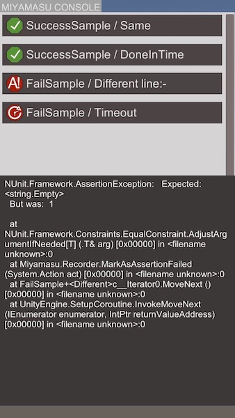

MiyamasuでUnityTestを実機実行できるようにした。
概要
Miyamasu Test Runnerをアップデートして、Unity5.6以降のテストを実機でも動かせる + 実行結果取得できるようにした。
サンプルシーン起動するといきなりこんな感じになる。

画像はiPhone実機上でのテスト実行と結果みたいなやつ。ログのところはコピーできるので端末からでもいろいろできる。
エディタ上からは、Unity自体のTestRunnerを使って実行できるようになっている。
Miyamasu
https://github.com/sassembla/Miyamasu
リリース。UnityPackageもあるよ。
https://github.com/sassembla/Miyamasu/releases/tag/0.6.0
動機
5.6から、まともな非同期テストが書けるようになった(二千何年の話をしてるんだ)
Unity5.6で非同期テストするときの基本的人権が保護されそう
http://sassembla.github.io/Public/2017:03:09%2019-09-05/2017:03:09%2019-09-05.html
で、これはUnityTestっていうAttributeをつけることで実現できてたんだけど、なんと実機上でテストを実行するパスが無かった。
Editorにつないで実機に送り込んで実行、ってやってると、なんだ、その、ダサい。
というわけで、EditorでもRuntimeでも実行できるようにした。
また、実機実行に際して、GUIを作るのがダルかったのでUUebViewっていうHTML書いたらGUIが出るやつを使っている。
動的にHTMLコンテンツを足していってオートリロードで動かす、みたいなのができた。
テスト結果を表示するところに使われている。具体的にはこんなコード。
public void AddLog (string[] message, Recorder.ReportType type, Exception e) {
var icon = "pass";
(中略)
var error = string.Empty;
if (e != null) {
var id = Guid.NewGuid().ToString();
error = @" button='true' src='" + Base64Encode(e.ToString()) + @"' id='" + id + @"'";
}
logList.Add(@"
<bg" + error + @">
<textbg>
<contenttext>" + messageBlock + @"</contenttext>
</textbg>
<iconbg><" + icon + @"/></iconbg>
</bg><br>");
}
HTMLを追加するだけで画面にこんな感じにコンテンツが出るようになる。

失敗したテストのとこに赤いの出るようにしたら便利だった。
テストコード
UnityTestがIEnumeratorを扱うようになった都合上、次のような形で非同期テストが書けるようになった。
一定時間のあいだ、条件が満たされるのを待つ。時間内に満たされればOK、ダメだったらTimeoutExceptionが出る。
https://github.com/sassembla/Miyamasu/blob/master/Assets/SampleTests/SampleTest.cs
[MTest] public IEnumerator Timeout () {
var obj = new GameObject("runner");
IsNotNull(obj);
var runner = obj.AddComponent<Runner>();
yield return WaitUntil(
() => runner.n == 100,// too much.
() => {throw new TimeoutException("not yet. runner.n:" + runner.n);},
1//sec
);
}
yield return WaitUntil() で非同期待ち出来るのいい。
Assert系はUnityに組み込まれているNUnitをロガーでラップしたものを用意した。
といっても全部ラップするの面倒臭かったので、まだログが出ない関数がある。(定義ジャンプすればわかる
そのうち全部ラップする。あと半分くらい。一括置換サイコー！
今後
AutoyaのテストもMiyamasuで書いてあるので、更新して動かせるようにする。
体感で1.5倍くらい高速になった。あとGUIがついたので色々楽に。
GUIからのテスト単体の再実行、Slackと連携してテストログの送付(誰かに送りつけたい)、Slackからのテスト送り込み、などをやっていきたい。